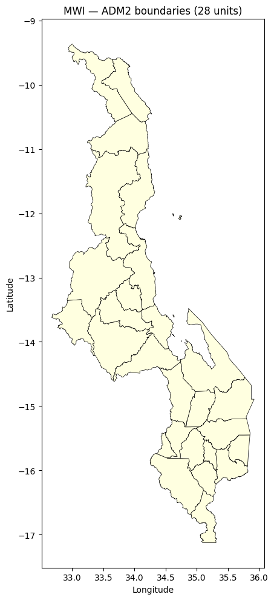
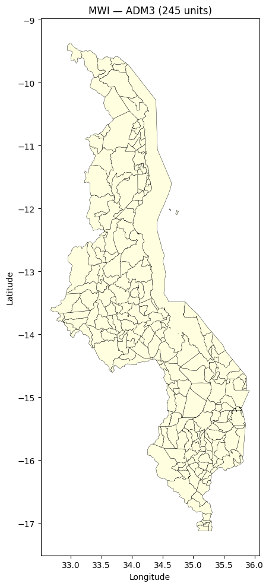
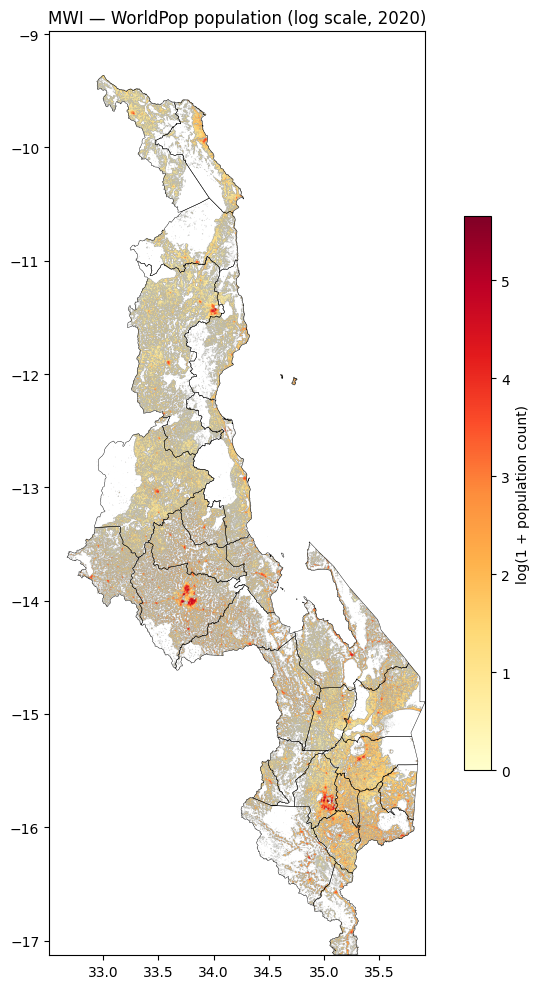

2. Downloading & Inspecting Geospatial Inputs#
The spatial_anonymization package can automatically download the geospatial layers
needed for survey coordinate displacement. This notebook demonstrates how to:
Download admin boundaries from geoBoundaries (with GADM fallback)
Auto-discover the most granular admin level available for a country
Download population rasters from WorldPop
Download water bodies from OpenStreetMap via the Overpass API
Inspect and visualize each layer
Requirements: An internet connection is needed to run the download cells. All downloads use
verify=Falsefor SSL, so they work behind corporate proxies.
2.1. 1. Python Setup#
%load_ext autoreload
%autoreload 2
import warnings
warnings.filterwarnings("ignore", message="Unverified HTTPS request")
from pathlib import Path
import geopandas as gpd
import matplotlib.pyplot as plt
from spatial_anonymization.data.inputs_manager import InputsManager
2.2. 2. Configuration#
Set the country ISO3 code and a local directory where downloaded files will be cached. Subsequent runs will reuse cached files instead of re-downloading.
Parameter |
Description |
|---|---|
|
ISO 3166-1 alpha-3 country code (e.g., |
|
Administrative level: 0 = country, 1 = region, 2 = district, 3+ = sub-district |
|
Local folder for cached downloads |
# ===================================
# WORKING DIRECTORY
# ===================================
DIR_WORK_BASE = Path.cwd().parents[0] # Set to the parent directory of the current working directory
DIR_DATA = DIR_WORK_BASE / "data/mwi2"
DOWNLOAD_DIR = DIR_DATA / "geospatial_inputs"
DOWNLOAD_DIR.mkdir(parents=True, exist_ok=True)
# ======================================
# CONFIGURATION
# ======================================
COUNTRY_ISO3 = "MWI" # Malawi
ADMIN_LEVEL = 2 # District level
print(f"Country: {COUNTRY_ISO3}")
print(f"Admin level: ADM{ADMIN_LEVEL}")
print(f"Download dir: {DOWNLOAD_DIR.resolve()}")
Country: MWI
Admin level: ADM2
Download dir: /Users/dmatekenya/Library/CloudStorage/OneDrive-WBG/Survey-Geo-Enhancement/git-repos/spatial-anonymization/data/mwi2/geospatial_inputs
2.3. 3. Download Admin Boundaries#
Creating an InputsManager with auto_download=True will automatically download
admin boundaries from geoBoundaries. If that source is unavailable, it falls back to GADM.
Downloaded files are cached as GeoJSON in DOWNLOAD_DIR and reused on subsequent runs.
inputs = InputsManager(
country_iso3=COUNTRY_ISO3,
admin_level=ADMIN_LEVEL,
auto_download=True,
download_dir=str(DOWNLOAD_DIR),
)
Downloading admin boundaries from geoBoundaries: MWI ADM2...
Saved admin boundaries to /Users/dmatekenya/Library/CloudStorage/OneDrive-WBG/Survey-Geo-Enhancement/git-repos/spatial-anonymization/data/mwi2/geospatial_inputs/MWI_admin_level2_geoboundaries.geojson
Successfully downloaded 28 admin boundaries from geoBoundaries
2.3.1. 3.1 Inspect Admin Boundaries#
admin_gdf = inputs.get_admin_gdf()
print(f"Admin level: ADM{inputs.get_admin_level()}")
print(f"Number of units: {len(admin_gdf)}")
print(f"CRS: {admin_gdf.crs}")
print(f"Columns: {list(admin_gdf.columns)}")
print()
admin_gdf.head()
Admin level: ADM2
Number of units: 28
CRS: EPSG:4326
Columns: ['shapeName', 'shapeISO', 'shapeID', 'shapeGroup', 'shapeType', 'geometry']
| shapeName | shapeISO | shapeID | shapeGroup | shapeType | geometry | |
|---|---|---|---|---|---|---|
| 0 | Balaka | 42251766B20450933672567 | MWI | ADM2 | POLYGON ((35.28365 -14.77625, 35.28173 -14.777... | |
| 1 | Blantyre | 42251766B636776762176 | MWI | ADM2 | POLYGON ((34.97696 -15.3521, 34.97618 -15.3515... | |
| 2 | Chikwawa | 42251766B28594103932184 | MWI | ADM2 | POLYGON ((34.73348 -15.81583, 34.52317 -15.808... | |
| 3 | Chiradzulu | 42251766B78568245260433 | MWI | ADM2 | POLYGON ((35.12323 -15.85648, 35.12411 -15.856... | |
| 4 | Chitipa | 42251766B85605316960959 | MWI | ADM2 | POLYGON ((33.6407 -9.60072, 33.63964 -9.6003, ... |
2.3.2. 3.2 Plot Admin Boundaries#
fig, ax = plt.subplots(1, 1, figsize=(8, 10))
admin_gdf.plot(ax=ax, edgecolor="black", facecolor="lightyellow", linewidth=0.5)
ax.set_title(f"{COUNTRY_ISO3} — ADM{ADMIN_LEVEL} boundaries ({len(admin_gdf)} units)")
ax.set_xlabel("Longitude")
ax.set_ylabel("Latitude")
plt.tight_layout()
plt.show()

2.4. 4. Auto-Discover Most Granular Admin Level#
If you don’t know the finest admin level available for a country, use
find_most_granular_admin(). It tries ADM5 → ADM4 → … → ADM0 and returns
the first level that succeeds (checking geoBoundaries, then GADM, at each level).
This updates
inputs.admin_levelandinputs.admin_gdfin place.
granular_gdf = inputs.find_most_granular_admin(max_level=5)
print(f"Most granular level: ADM{inputs.admin_level}")
print(f"Number of units: {len(granular_gdf)}")
Downloading admin boundaries from geoBoundaries: MWI ADM5...
Downloading admin boundaries from GADM: MWI level 5...
Downloading admin boundaries from geoBoundaries: MWI ADM4...
Downloading admin boundaries from GADM: MWI level 4...
Downloading admin boundaries from geoBoundaries: MWI ADM3...
Saved admin boundaries to /Users/dmatekenya/Library/CloudStorage/OneDrive-WBG/Survey-Geo-Enhancement/git-repos/spatial-anonymization/data/mwi2/geospatial_inputs/MWI_admin_level3_geoboundaries.geojson
Successfully downloaded 245 admin boundaries from geoBoundaries
Found most granular admin level: ADM3 (245 features) from geoBoundaries
Most granular level: ADM3
Number of units: 245
fig, ax = plt.subplots(1, 1, figsize=(8, 10))
granular_gdf.plot(ax=ax, edgecolor="black", facecolor="lightyellow", linewidth=0.3)
ax.set_title(f"{COUNTRY_ISO3} — ADM{inputs.admin_level} ({len(granular_gdf)} units)")
ax.set_xlabel("Longitude")
ax.set_ylabel("Latitude")
plt.tight_layout()
plt.show()

2.5. 5. Download Population Raster#
Downloads a WorldPop constrained population count raster (100 m resolution). The raster is used during anonymization to avoid displacing points into unpopulated areas.
Parameter |
Description |
|---|---|
|
Population estimate year (2015–2030). Default: 2025 |
raster_path = inputs.download_population_raster(year=2020)
print(f"Raster saved to: {raster_path}")
print(f"File size: {Path(raster_path).stat().st_size / 1024 / 1024:.1f} MB")
Downloading WorldPop raster for MWI (2020) from R2025A v1...
Successfully downloaded WorldPop raster to /Users/dmatekenya/Library/CloudStorage/OneDrive-WBG/Survey-Geo-Enhancement/git-repos/spatial-anonymization/data/mwi2/geospatial_inputs/mwi_worldpop_2020.tif
Raster saved to: /Users/dmatekenya/Library/CloudStorage/OneDrive-WBG/Survey-Geo-Enhancement/git-repos/spatial-anonymization/data/mwi2/geospatial_inputs/mwi_worldpop_2020.tif
File size: 27.2 MB
2.5.1. 5.1 Inspect Population Raster#
import rasterio
from rasterio.plot import show
import numpy as np
with rasterio.open(raster_path) as src:
print(f"Dimensions: {src.width} x {src.height} pixels")
print(f"Bands: {src.count}")
print(f"CRS: {src.crs}")
print(f"Resolution: {src.res[0]:.6f}° x {src.res[1]:.6f}°")
print(f"Bounds: {src.bounds}")
print()
# Read and display
data = src.read(1)
# Mask nodata for display
nodata = src.nodata
if nodata is not None:
data = np.where(data == nodata, np.nan, data)
fig, ax = plt.subplots(1, 1, figsize=(8, 10))
im = ax.imshow(
np.log1p(data), # log scale for better contrast
cmap="YlOrRd",
extent=[src.bounds.left, src.bounds.right, src.bounds.bottom, src.bounds.top],
)
admin_gdf.boundary.plot(ax=ax, edgecolor="black", linewidth=0.3)
ax.set_title(f"{COUNTRY_ISO3} — WorldPop population (log scale, {2020})")
plt.colorbar(im, ax=ax, label="log(1 + population count)", shrink=0.6)
plt.tight_layout()
plt.show()
Dimensions: 3895 x 9314 pixels
Bands: 1
CRS: EPSG:4326
Resolution: 0.000833° x 0.000833°
Bounds: BoundingBox(left=32.67333248264, bottom=-17.129999595480015, right=35.91916580299, top=-9.368332959860016)

2.6. 6. Download Water Bodies#
Downloads water features (lakes, rivers, streams) from OpenStreetMap via the Overpass API. Water bodies are used during anonymization to prevent displacing points into water.
Note: The Overpass API may timeout for large countries. If this fails, you can provide your own water body shapefile via the
water_gdfparameter.
water_gdf = inputs.download_water_bodies()
if water_gdf is not None:
print(f"Water features: {len(water_gdf)}")
print(f"Geometry types: {water_gdf.geometry.type.value_counts().to_dict()}")
print(f"CRS: {water_gdf.crs}")
else:
print("No water bodies downloaded (API may have timed out).")
if water_gdf is not None:
fig, ax = plt.subplots(1, 1, figsize=(8, 10))
admin_gdf.plot(ax=ax, edgecolor="gray", facecolor="lightyellow", linewidth=0.3)
water_gdf.plot(ax=ax, color="steelblue", linewidth=0.5, alpha=0.7)
ax.set_title(f"{COUNTRY_ISO3} — Water bodies ({len(water_gdf)} features)")
ax.set_xlabel("Longitude")
ax.set_ylabel("Latitude")
plt.tight_layout()
plt.show()
2.7. 7. Summary of Available Inputs#
Use the has_* methods to check which layers are loaded.
print("=" * 45)
print(f" Input Summary for {COUNTRY_ISO3}")
print("=" * 45)
print(f" Admin boundaries: {'Yes' if inputs.has_admin() else 'No'}")
print(f" Admin level: ADM{inputs.admin_level}")
print(f" Population raster: {'Yes' if inputs.has_population() else 'No'}")
print(f" Water bodies: {'Yes' if inputs.has_water() else 'No'}")
print(f" UTM EPSG: {inputs.get_utm_epsg()}")
print("=" * 45)
2.8. 8. Using Your Own Data#
You can skip the automatic downloads entirely by providing your own GeoDataFrames and raster paths:
import geopandas as gpd
my_admin = gpd.read_file("path/to/my_admin_boundaries.shp")
my_water = gpd.read_file("path/to/my_water_bodies.shp")
inputs = InputsManager(
country_iso3="MWI",
admin_gdf=my_admin, # your own boundaries
admin_level=3,
water_gdf=my_water, # your own water layer
population_raster_path="path/to/pop.tif", # your own raster
auto_download=False, # no downloads needed
)
When
admin_gdfis provided, the package uses it directly — no download is attempted, even ifauto_download=True.
Next steps: Once you have your inputs ready, head to the Getting Started notebook to run the full anonymization workflow.